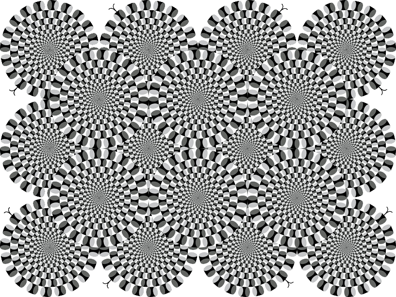
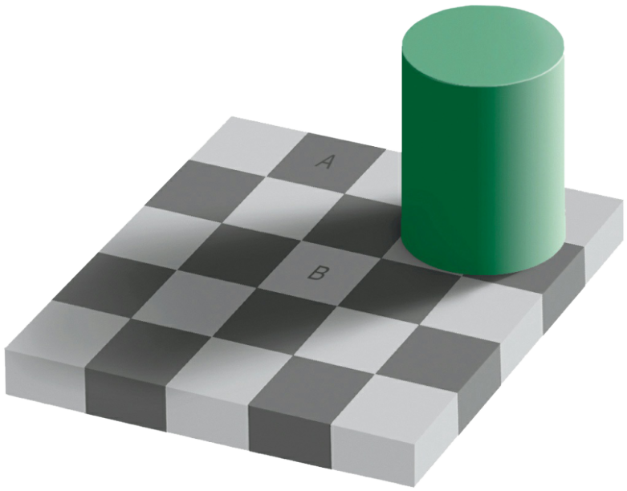
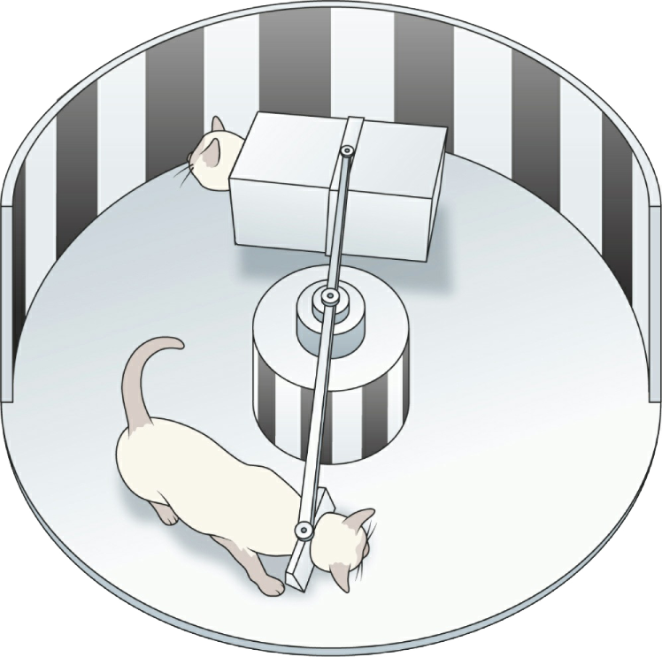
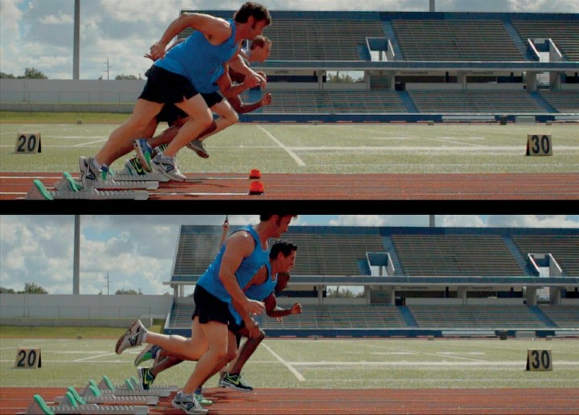
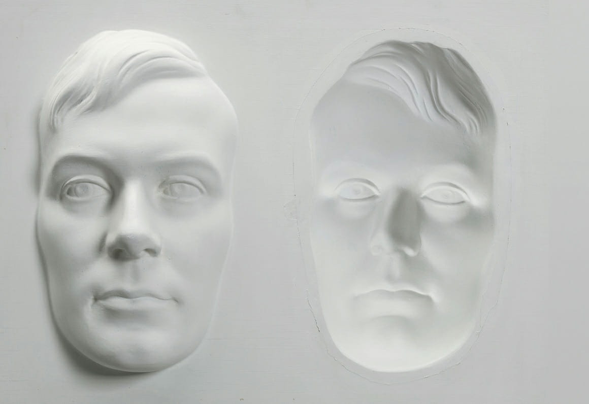
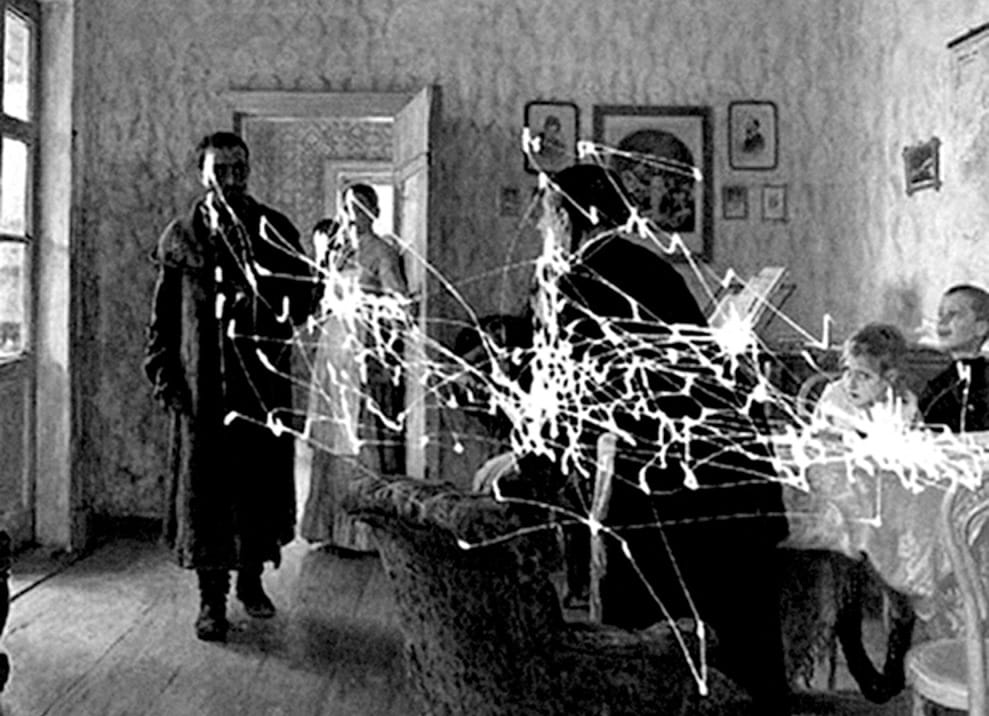
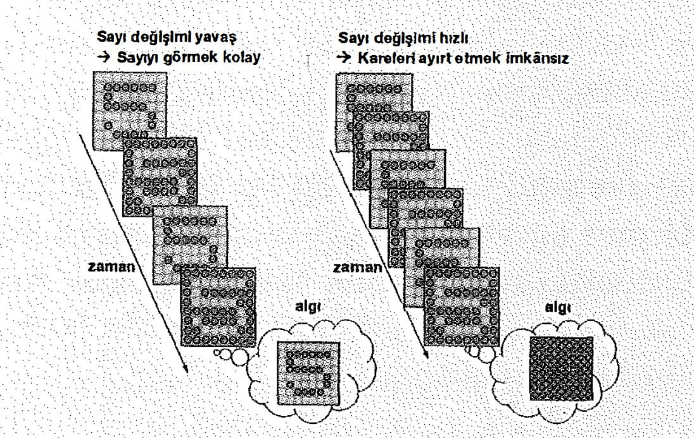

Beynin biyolojik iç yapısı deneyimlerimizi nasıl oluşturur? Zümrüt yeşilinin görüntüsünü, tarçının tadını, ıslak toprağın kokusunu? Ya size deseydim ki çevrenizdeki dünya, bütün zengin renkleriyle, dokusuyla, sesleriyle ve kokularıyla yalnızca bir yanılsama; beyninizin sizin için tasarladığı bir gösteri? Gerçekliği olduğu gibi algılayabilseydiniz, onun renksiz, kokusuz, tatsız sessizliği karşısında donakalırdınız. Beyninizin dışında kalan her şey, enerji ve maddeden ibarettir. Milyonlarca yıllık evrim süreci boyunca, insan beyni bu enerji ve maddeyi zengin bir varlık deneyimine dönüştürmede ustalaşmıştır. Ama nasıl?
Sabah uyandığınız andan başlayarak bir ışık, ses ve koku selinin hücumuna uğrarsınız; duyularınız dolup taşar. Yapacağınız tek şey, her gün orada olmaktır; düşünmenize ya da herhangi bir çaba göstermenize gerek kalmadan, dünyanın yadsınamaz gerçekliğiyle sarılmışsınızdır artık.
Peki ama bu gerçekliğin ne kadarı beyninizin ürünüdür? Ne kadarı yalnızca sizin kafanızın içinde kendini gösterir?
Önceki sayfadaki "dönen yılanlar" görüntüsüne bakın. Aslında sayfada hareket eden bir şey olmadığı halde, çemberler döndükleri izlenimini vermektedirler.
Şeklin yerinde sabit durduğunu bildiğiniz halde, beyniniz nasıl olur da hareket algılar?
Bir de yukarıdaki dama tahtasına göz atın.
Pek öyle görünmese de, A ile işaretli karenin rengi, B ile işaretli karenin rengiyle aynıdır. Resmin geri kalanını kapatırsanız bunun doğru olduğunu göreceksiniz. Fiziksel yönden birbirinin aynı olan bu iki kare, nasıl bu kadar farklı görünebilir?
Bu tür göz yanılsamaları, dış dünyayla ilgili kurduğumuz görüntünün, gerçeği tam olarak temsil etmeyebileceğinin ilk ipuçlarını verir bize. Gerçeklik algımız, "oralarda" olup bitenlerden çok, beynimizin içinde olup bitenlerle ilgilidir.
Duyularınız aracılığıyla dış dünyaya doğrudan erişiminiz olduğunu hissedersiniz. Elinizi uzatır ve fiziksel dünyaya ait bir nesneye dokunabilirsiniz; bu kitap ya da oturmakta olduğunuz koltuk gibi. Bu dokunuşu parmaklarınızda hissetseniz de, aslında her şey beynin görev kontrol merkezinde gerçekleşmektedir. Aynı şey, bütün duyusal deneyimleriniz için de geçerlidir. Görme, gözlerinizde; işitme, kulaklarınızda; koklama, burnunuzda yürütülen eylemler değildir. Bütün duyusal deneyimleriniz, beyninizdeki bilgisayımsal malzeme içindeki etkinlik fırtınalarıyla gerçekleşir.
İşin özü şurada yatar: Beyninizin dışarıdaki dünyaya herhangi bir erişimi yoktur. Kafatasımzın içindeki karanlık, sessiz odasına hapsedilmiş olan bu organ dış dünyayı hiçbir zaman doğrudan deneyimlernemiştir ve deneyimleyemeyecektir de.
Dışarıdaki bilginin beyne girişi için tek bir yol vardır: Duyu organlarınız, yani gözleriniz, kulaklarınız, burnunuz, diliniz ve deriniz birer çevirmen olarak işlev görür ve birbirinden çok farklı bilgi kaynaklarından (fotonlar, hava basınç dalgaları, molekül derişimleri, basınç, doku, sıcaklık gibi) algıladıkları bilgileri beyinde kullanılan ortak birime; elektrokimyasal sinyallere dönüştürürler.
Bu elektrokimyasal sinyaller, yoğun nöron ağı içinde fişek gibi ilerlerler. Sinyal üretici temel hücreler, nöronlardır. Beyin içinde bulunan yaklaşık yüz milyar nörondan her biri, yaşamınız boyunca her saniye onlarca ya da yüzlerce elektrik atımını binlerce başka nörona göndermektedir.
Deneyimiediğiniz her şey, algıladığınız her bir görüntü, ses ya da koku, dolaysız bir deneyim olmaktan çok, karanlık bir tiyatroda oynanan elektrokimyasal bir yorumdur.
Öyleyse beyin, bu muazzam elektrokimyasal örüntüleri, dünyayla ilgili işe yarar bir kavrayışa nasıl dönüştürür? Bunu yapmak için kullandığı yol, farklı duyusal girdilerden aldığı sinyalleri karşılaştırmak ve "dışarıda olup bitenler" hakkında en iyi tahmini yürütmek için de var olan örüntüleri saptamaktır. Bu işleyiş öylesine güçlüdür ki, yapılan işin hiç çaba gerektirmediği izlenimini verir. Ama biraz daha yakından bakalım duruma.
En baskın duyumuzla; görmeyle işe başlayalım. Görme eylemi bizim için öylesine doğaldır ki, bunu gerçekleştiren hadkulade mekanizmayı takdir etmek zordur. İnsan beyninin yaklaşık üçte biri görme işlevine; ham haldeki ışık fotonlarını annemizin yüzüne, sevgi dolu hayvan dostumuza ya da üzerinde uyumak üzere olduğumuz kanepeye dönüştürmeye adanmıştır.
Perde arkasında yürüyen işleri görebilmek için, görme duyusunu kaybettikten sonra onu yeniden kazanma şansını yakalayan bir kişinin hikayesine göz atalım.
Mike May, görme yetisini üç buçuk yaşındayken kaybetmişti. Kimyasal bir patlama nedeniyle korneası hasar görmüş ve gözlerinin fotonlara erişim yolu kalmamıştı. Ama körlük, onu hem başarılı bir iş adamı hem de bir paralimpik şampiyona kayakçısı olmaktan alıkoymamıştı. Kayak yaparken, yolunu sesli işaretlerden yararlanarak buluyordu.
Mike, kör olarak geçirdiği kırkı aşkın yılın sonunda, gözlerindeki fiziksel hasarı onarabilecek, öncü nitelikteki bir kök hücre tedavisinden haberdar oldu ve ameliyat olmaya karar verdi. Körlüğü ne de olsa korneadaki berraklık yitiminin bir sonucuydu; çözüm bu durumda apaçıktı.
Ancak beklenmedik bir şey oldu. Bandajların çıkarıldığı anı görüntüleyebilmek için televizyon kameraları da hazır beklemekteydi. Mike, doktoru sargılarını açarken yaşadığı deneyimi şöyle anlatıyordu: "Bir anda ışıklar çakmış ve görüntüler gözüme doğru yağmaya başlamıştı. Aniden serbest kalmış bir görsel bilgi seli düşünün. Bu etki, benim için fazla güçlüydü."
Mike'ın yeni korneaları ışığı tam da olması gerektiği gibi alıyor ve odaklıyorlardı; ama beyni, almakta olduğu bu bilgiden bir anlam çıkaramamıştı. Mike, çekimdeki haber kameralarının karşısında çocuklarına baktı ve gülümsedi. Ancak gerçekte dehşete düşmüştü; çünkü dış görünüşlerinden bir şey anlamadığı gibi, hangisinin hangisi olduğunu da çıkaramamıştı. "Ne yüzlerini tanıdım ne de başka bir şeyi" diye anlatıyordu.
Biyoloji, dış dünyadan gelen bilgiyi elektrokimyasal sinyallere dönüştürmek için birçok yol bulmuştur. Sahip olduğunuz çeviri makinelerinden bazıları şunlardır: iç kulaktaki hücreleri, deride bulunan farklı tiplerdeki dokunma reseptörleri (almaçları), dildeki tat cisimcikleri, koku soğancığındaki moleküler reseptörler ve arkasındaki ışık reseptörleri (fotoreseptörler).
Dış ortamdan gelen sinyaller, beyin hücrelerince taşınan elektrokimyasal sinyallere "çevrilmek" zorundadır. Bu, beynin vücut dışındaki dünyadan gelen bilgilerle temas kurması için gereken ilk adımdır. Gözler, fotonları; iç kulak mekanizmaları havadaki titreşimleri; derideki (ayrıca vücut içindeki) reseptörler (almaçlar) basınç, gerilme, sıcaklık ve zararlı kimyasalları; burun, havada süzülen koku moleküllerini; dil de tat moleküllerini elektrik sinyallerine dönüştürür. Dünyanın bir köşesinden ziyaretçilerin akınına uğrayan bir şehirde, parasal işlemlerin geçerli olabilmesi için yabancı paranın ortak bir para birimine dönüştürülmesi gerekir. Aynı şey beyin için de geçerlidir. Temelde kozmopolit bir yapıya sahip olan bu organ, birçok farklı ziyaretçiyi kabul eder.
Nörobilimin çözülmemiş bilmecelerinden biri, "birleştirme problemi" olarak bilinir: Görme belirli beyin bölgesinde, işitme bir başkasında, dokunma vs. işlendiğine göre, beyin dış dünyayla ilgili tek ve bütünleşik bir resmi nasıl oluşturur? Bu sorunun yanıtı hala verilememiş olsa da, nöronlar arasında kullanılan ortak birimin (ve bunun yanında, muazzam bağlanma özelliklerinin), çözümün anahtarı olduğu düşünülmektedir.
Nakil, cerrahi açıdan tam anlamıyla başarılı olmuştu. Ama Mike'a sorarsanız, yaşadığı şeyi "görme" olarak tanımlamak zordu. Durumu şöyle özetliyordu Mike: "Beynim o sırada 'Aman tanrım!' diye haykırıyor olsa gerek".
Mike, doktorların ve ailesinin de yardımıyla muayene odasından çıkıp koridora yürürken bir yandan da bakışlarını da halıya, duvardaki resimlere, kapı girişlerine yöneltiyor, ancak bunların hiçbiri kendisine bir şey ifade etmiyordu. Eve gitmek üzere arabaya oturtulduğunda, gözlerini arabalara, binalara, çevresinden hızla geçen insanlara çevirmiş ve ne gördüğünü anlamaya çalışsa da başarılı olamamıştı. Otoyola çıktıklarında ise, önlerindeki büyük dikdörtgene çarpacaklarını düşünerek irkilmişti. Büyük dikdörtgen, aslında altından geçtikleri bir otoyol levhasıydı. Nesnelerin ne kimlikleri ne de derinlikleri hakkında bir fikri vardı. Hatta ameliyattan sonra kayak yapmak, körken yaptığından daha zor hale gelmişti. Derinlik algısında yaşadığı sorunlar nedeniyle insanlar, ağaçlar, gölgeler ve delikler arasındaki farkı anlamakta zorlanıyordu. Hepsi onun için karın beyazlığıyla tezat oluşturan koyu renkli nesnelerdi yalnızca.
Mike'ın deneyimlerinden ortaya çıkan ders, görme sisteminin bir kamera gibi çalışmadığıdır. Buna paralel olarak görmek, merceğin önündeki kapağı açmaktan ibaret değildir. Görmek için işlevsel gözlerden fazlası gerekir.
Mike örneğinde, kırk yıl sürmüş olan körlük, beyinde görme sistemine ayrılmış alanın (görme korteksinin), büyük oranda başka duyularca (işitme ve dokunma gibi) işgal edilmesine neden olmuştu. Bu da beynin, görme işlevi için ihtiyaç duyduğu bir şeyi; bütün sinyalleri bir araya dokuma becerisini etkilemişti. İleride değineceğimiz üzere görme, milyarlarca nöronun, karmaşık bir senfoniye benzetilebilecek belirli bir yapılanma içindeki eşgüdümü sonucunda ortaya çıkar.
Ameliyatın üzerinden on beş yılın geçtiği bugünlerde Mike, kağıt üzerindeki yazıları okurken ya da yüz ifadelerini anlamlandırırken hala zorlanıyor. Kusurlu görsel algılarının ona sunduğundan daha iyisine ihtiyacı olduğunda da, sağlama yapmak için diğer duyularından yararlanıyor ve gerektiğinde dokunuyor, kaldırıyor, dinliyor. Duyular aracılığıyla yapılan bu karşılaştırma ise henüz çok küçükken, beynimizin dünyayı anlamaya çalıştığı ilk zamanlarda hepimizin uyguladığı bir yöntem.
Bebeklerin önlerindeki bir nesneye dokunmak üzere uzanmaları, yalnızca dokusunu ve biçimini öğrenmek için değildir. Bu tür hareketler, görmeyi öğrenmek için de gereklidir. Vücut hareketlerimizin görme için gerekli olduğu düşüncesi biraz tuhaf gelse de, bu görüş 1963'te iki kedi yavrusuyla yapılan incelikli bir deneyle doğrulanmıştı.
MIT (Massachusetts Teknoloji Enstitüsü) araştırmacılarından Richard Held ve Alan Hein, dikey şeritlerle boyanmış bir silindirin içine iki kedi yavrusu koydular. İki kedi de, silindirin içinde hareket ederken görsel uyaranları alabiliyordu; ancak yaşadıkları deneyimler arasında önemli bir fark vardı: Birinci kedi kendi hareketiyle yürürken, ikincisi, merkezi eksene bağlı bir kutu içinde yer değiştiriyordu. Düzenek, iki kedinin de tam olarak aynı şeyi göreceği şekilde ayarlanmıştı.
Şeritler, ikisi için de aynı zamanda ve aynı hızla dönüyordu. Görme eylemi, eğer fotonların göze çarpmasından ibaretse, iki kedinin görme sistemlerinin de aynı şekilde gelişmesi gerekirdi. Ama şaşırtıcı sonuca göre, kendi hareketiyle yer değiştiren kedide normal görüş gelişirken, kutunun içinde hareket eden kedi normal biçimde görmeyi öğrenemedi; çünkü görme sistemi de normal bir gelişim gösterememişti.
Görmek, fotonların beyindeki görme korteksi tarafından doğrudan yorumlanabilmesi demek değildir; bu deneyime bütün vücut dahil olur. Beyne gelen sinyaller, ancak alıştırmalar yoluyla anlam kazanır; bunun için de sinyallerin, hareketlerimiz ve onların duyusal sonuçlarıyla ilgili bilgilerle eşleştirilmeleri gerekir. Beynin, görsel verilerin gerçek anlamlarına ilişkin doğru yorumlar yapabilmesinin tek yolu budur.
Doğduğunuzda dünyayla herhangi bir etkileşirnde bulunarnıyar ve duyusal bilginin anlamını geribildirim aracılığıyla çözümleyemiyor olsaydınız, görmeniz de kuramsal olarak mümkün olmayacaktı. Bebekler yataklarındaki parmaklıklara çarptıklarında, ayak parmaklarını ağızlarına soktuklarında ya da oyuncak küpleriyle oynadıklarında yaptıkları şey, keşiften ibaret değildir; aslında bir yandan da görme sistemlerini eğitmektedirler. Karanlıkla çevrili beyinleri bu sırada, dünyaya sunulan hareketlerin (başı döndürmek, bir nesneyi itmek ya da elinden bırakmak gibi), geri dönen duyusal girdileri nasıl etkilediğini öğrenmektedir. Bu geniş kapsamlı deneylerin sonucunda görme eylemi de yavaş yavaş gelişir.
Görmek, insana öyle zahmetsiz bir iş gibi gelir ki, beynin bunu mümkün kılmak için harcadığı çabayı takdir etmek zordur. Ben de bu sürece biraz daha yakından bakmak için Irvine, California'ya gittim. Görme sistemim beklediği sinyalleri alamayınca olacakları merak ediyordum.
California Üniversitesi'nden Dr. Alyssa Brewer, beynin uyum gösterme kapasitesi üzerine çalışmalar yapıyor. Bunun için katılımcıları dış ortamın sağ ve sol taraflarının yer değiştirmesini sağlayan prizmatik gözlüklerle donatarak, görme sisteminin yeni durumla nasıl başa çıkmaya çalıştığını inceliyor.
Prizmatik gözlükleri taktığımda dışarıda harika bir bahar günü hüküm sürmekteydi. Ama dünya, benim için bir anda tersine döndü: Sağımdaki nesneler solda, solumdakiler de sağda görünüyordu. Alyssa'nın nerede durduğunu anlamaya çalıştığımda görme sistemim bir şey, işitme sistemim de başka bir şey söylüyordu bana. Duyularım birbiriyle uyuşmuyordu. Bir nesneyi tutmak için uzandığımda, elimin görüntüsü, kaslarımın iddia ettiği konumda değildi. Daha iki dakika geçmemişti ki, midem bulanmaya, vücudum terlemeye başlamıştı.
Gözlerim normal biçimde çalıştığı ve dünyayı algılamaya devam ettiği halde, görsel veri akışı diğer sistemlere ait veri akışlarıyla uyuşmamaktaydı. Beynimin işi oldukça zorlaşmıştı. Sanki görmeyi yeni baştan öğreniyordum.
Bu gözlükleri takmanın, bana sonsuza kadar aynı ölçüde güç gelmeyeceğini biliyordum. Bir diğer katılımcı olan Brian Barton bunları bir haftadır kullanmaktaydı ve hiç de benim gibi kusma noktasına gelmiş görünmüyordu. Uyum düzeylerimizi karşılaştırabilmek için, onu bir pişirme yarışmasına davet ettim. Yarışmada bir kaba yumurta kıracak, kek karışımını yumurtaya ilave edip karıştıracak, hamuru küçük kalıplardan oluşan kalıp tepsisine dökecek ve tepsiyi fırına verecektik.
Buna yarışma falan denmezdi. Brian'ın kekleri fırından gayet normal bir görünürole çıkmış, benim yaptığım hamur ise kısmen tezgahta kurumuş, kısmen de tepsiye sıvanmış halde pişmişti. Brian fazla sıkıntıya girmeden yolunu bulmayı becerirken ben yanında fazlasıyla beceriksiz kalmıştım. Yaptığım her hareket için bilinçli biçimde düşünmek ve çabalamak zorundaydım.
Bu gözlükleri takmak, görsel işlemleme süreci arkasında yatan, normalde gizlenmiş durumdaki çabayı deneyimleme şansı tanımıştı bana. O sabah, gözlükleri takmamın hemen öncesinde beynim dünyaya ilişkin yıllar sürmüş deneyiminden yararlanabilmekteydi. Ama tek bir duyusal girdinin basitçe yer değiştirmesi, bütün işleri bozmuştu.
Brian'ın beceri düzeyine ulaşmak için, dünyayla bu şekilde etkileşim kurmaya günlerce devam etmem gerektiğini biliyordum. Nesneleri kavrayabilmek için uzanıp duracak, seslerin geldiği yönü izleyecek, kol ve bacaklarımın konumlarına sürekli dikkat edecektim. Tıpkı Brian'ın yedi gündür yapmakta olduğu gibi ben de yeterince alıştırma yaparsam, beynim duyular arasında kesintisiz biçimde kurduğu çapraz bağlantıların etkisiyle eğitilebilecekti. Sahip olduğum nöral ağlar, beyne giren çeşitli veri akışlarının, diğer veri akışlarıyla nasıl eşleştiğini bu eğitimle çözebilirdi.
Brewer, gözlükleri birkaç gün takan insanların sol ve sağ kavramlarının "yeni" ve "eski" formlarını ayırt etme yönünde içsel bir sezi geliştirdiklerini açıklıyor. Bu kişiler bir hafta sonra tıpkı Brian gibi normal biçimde yer değiştirebilir hale geliyor ve hangi sağ ve solun "eski", hangisinin "yeni" olduğuyla ilgili kavramsal temeli kaybediyorlar. Dünya için kurmuş oldukları uzamsal harita, böylece değişiyor. İki haftanın sonunda ise, artık okuma ve yazmaları düzeldiği gibi, yürüme ve yakalama hareketleri de gözlüksüz bir kişinin düzeyine ulaşmış oluyor. Sonuçta, böylesine kısa bir sürede yer değiştirmiş girdilerle rahatça başa çıkabilir hale gelebiliyorlar.
Beyin, aslında girdinin ayrıntılarıyla fazla ilgilenmez; ilgilendiği tek şey, dünyada yolunu bulup ihtiyacı olan şeyi elde etmenin en verimli ve etkili yolunu çözümlemektir. Daha düşük düzeyde kalan sinyallerle uğraşma işi, sizin adınıza böylece halledilir. Olur da günün birinde bu prizmatik gözlüklerden takma şansını yakalarsanız, fırsatı kaçırmayın. Bu deneyim, görme işini zahmetsiz gibi göstermek için beynin harcadığı büyük çabayı anlamanızı sağlayacaktır.
Artık biliyoruz ki algılarımız, beynimizin farklı türden duyusal veri akışlarını birbirleriyle karşılaştırmasını gerektiriyor. Ancak, bu tür karşılaştırmaları oldukça zor hale getiren bir şey vardır: zamanlama. Bütün duyusal veri akışları (görme, işitme, dokunma, vb.) beyinde farklı hızlada işlenirler. Bir yarış pistincieki kulvarlara diziimiş kısa mesafe koşucularını düşünün. Tabanca ateşlendiği anda çıkış takozlarından fırladıkları izlenimine kapılırsınız. Ama aslında iki eylem eşzamanlı (senkronize) değildir: Yarışçıları yavaş çekimde izlerseniz, tabanca atışıyla hareketin başlangıcı arasında az sayılmayacak bir aralık olduğunu fark edersiniz: saniyenin onda ikisi kadar. (Hatta bundan önce çıkış yapanlar yarıştan diskalifiye edilirler.) Atletler, bu aralığı mümkün olduğunca kısaltmak için antrenman yapsalar da, biyolojileri onlara birtakım temel sınırlar dayatmaktadır: Beynin sesi kaydetmesi ve önce motor kortekse, oradan da omurilik aracılığıyla kaslara sinyal göndermesi gerekir. Saniyenin binde birinin kazanmak ya da kaybetmek anlamına gelebildiği bir sporda, bu tepki şaşırtıcı ölçüde yavaş gibidir.
Peki, yarışı başlatmak için sözgelimi tabanca yerine bir flaş ışığından yararlansak, bu gecikmeyi kısaltmak mümkün olabilir mi? Işık sesten hızlı yol aldığına göre, bu değişiklik yarışçıların çıkışını hızlandıramaz mı?
Bu düşünceyi sınamak için birkaç kısa mesafe koşucusu bir araya geldik. 59. sayfada üstteki fotoğraf flaş ışığıyla, alttaki de tabancayla çıkış yaptığımız iki durumu gösteriyor.
Yaptığımız denemede, ışığa daha yavaş tepki vermiştik. Dış dünyada ışığın hızını hesaba kattığımızda, bu sonuç ilk bakışta sezgilerimize ters düşüyor. Ancak olanları anlamak için asıl dikkate almamız gereken şey, içerideki bilgi işlemleme hızı olmalıdır. Görsel veriler, işitsel verilerle kıyaslandığında daha karmaşık işlemleme sürecine tabidirler. Bu nedenle, flaş ışığıyla ilgili bilgileri taşıyan sinyallerin görme sisteminde ilerlemesi, patlama sesini taşıyan. sinyallerin işitme sisteminde ilerlemesinden daha uzun zaman alır. Biz de ışığa 190 milisaniyede, sese ise yalnızca 160 milisaniyede tepki vermiştik. Koşuculara çıkış işareti verirken tabanca kullanılmasının nedeni de budur.
Ancak bu noktada işler biraz tuhaflaşıyor. Az önce, beynin sesleri görüntülerden daha hızlı işlediğini söyledik. Ama ellerinizi gözünüzün önünde çırptığınızda neler olduğuna dikkat edin. Bunu hemen deneye bilirsiniz.
Her şey ne kadar da eşzamanlı görünüyor, değil mi? Peki, ses ışıktan daha hızlı işleniyorsa bu nasıl olabilir? İşin aslı şu ki, gerçeklik algınız, aslında ustalıkla yapılan düzenleme hilelerinin bir sonucudur: Beyin, sinyallerin varış zamanları arasındaki farkı gizler. Nasıl mı? Size gerçeklik olarak sunduğu şey, özünde gerçekliğin geciktirilmiş bir versiyonudur. Beyniniz, olan bitenle ilgili bir hikayeye karar vermeden önce, duyulardan gelen bütün bilgileri bir araya toplar.
Zamanlamayla ilgili bu zorluklar işitme ve görmeyle sınırlı değildir. Duyusal bilgiler, duyunun türüne bağlı olarak farklı sürelerde işlenir. Yetmezmiş gibi, tek bir duyu için de zamansal farklılıklar söz konusu olabilir. Sözgelimi, ayak başparmağınızdan gelen sinyallerin beyne ulaşması, burundan gelen sinyallerle kıyaslandığında daha uzun sürer. Ama bu farkları algılamazsınız. Önce sinyalleri bir araya topladığınızdan, her şey size eşzamanlı görünür. Bütün bunlardan çıkan tuhaf sonuç, aslında geçmişte yaşadığınızdır. Siz an'ı yaşadığınızı hissedene kadar, o an çoktan uçup gitmiştir. Duyulardan gelen bilginin eşzamanlı hale getirilmesi için ödediğiniz bedel, bilinçli farkındalığın fiziksel dünyanın gerisinden gelmesidir. Bu, bir olayın gerçekleşmesi ile onu deneyimlemeniz arasındaki aşılmaz boşluğu temsil eder.
Gerçeklik deneyimimiz, beynimizin nihai kurgusudur. Bu deneyim, duyulardan gelen bütün veri akışlarına dayansa da, onlara bağımlı değildir. Nereden mi biliyoruz? Biliyoruz, çünkü duyularımızı kaybettiğimizde gerçeklik algımız sonlanmaz; sadece tuhaflaşır.
Güneşli bir San Francisco gününde, bir tekneye bindim ve soğuk suları aşarak meşhur ada hapishanesi Alcatraz'a vardım. Niyetim "Delik" adı verilen özel bir hücreyi görmekti. Dış dünyada kuralları çiğnediğinizde Alcatraz'a gönderilirdiniz. Alcatraz'da kuralları çiğnediğinizde ise Delik'e gönderilirdiniz.
Delik' e girdim ve kapıyı arkamdan kapadım. Burası yaklaşık üç metreye üç metre boyutlarında, zifiri karanlık bir hücreydi; tek bir ışık fotonunun bile içeriye sızmasına olanak yoktu. Bunun yanında, hücrede mutlak bir sessizlik hakimdi. Burada tümüyle yalnız, tam anlamıyla kendinizle baş başaydınız.
Bu hücrede saatlerce ya da günlerce kapalı kalmak nasıl bir deneyimdi? Yanıtı bulmak için Alcatraz'da bir süre kalmış eski mahkumlardan biriyle görüştüm. Silahlı soyguncu Robert Luke ("Cold Blue Luke" lakabıyla tanınıyordu) hücresini paramparça ettiği için Delik'te yirmi dokuz gün tutulmuştu. Şöyle anlatıyordu deneyimlerini: "Karanlık Delik kötü bir yerdi. Burada tutulmayı kaldıramayanlar olmuştu. Girdikten birkaç gün sonra kafalarını duvarlara vuruyorlardı. Oraya girince neler yapacağınızı bilmezdiniz. Öğrenmek de istemezdiniz."
Dış dünyadan tümüyle yalıtılmış, ne ses ne de ışığın olduğu bu delikte Luke'un gözleri ve kulakları herhangi bir uyarana aç kalmış, ama zihni "dış dünya" kavramını terk etmeyerek kurgulamalarmı sürdürmüştü: "Hatırlıyorum da, hayallere dalıp giderdim: Sıkça gördüğüm hayallerden biri de, uçurtma uçurmaktı. Basbayağı gerçekmiş gibi yaşıyordum bunu." Luke'un beyni görmeye devam etmekteydi.
Tıpkı bir kentte olduğu gibi, beynin bir bütün olarak işleyişi de sayısız bileşenlerin birbirleriyle bir ağ aracılığıyla kurdukları etkileşimin sonucudur. Beynin her bir bölgesine "falanca bölge falanca işi yapar" gibilerinden belirli bir işlev atama eğilimi karşımıza sık çıkar. Ama beyinsel işlevler, sınırları belirgin bir modüller topluluğundaki etkinlik toplamı olarak ele alınamaz- bu yöntemdeki girişimlerin tarihi epeyce uzun olsa da.
Onun yerine, beyni bir kent olarak düşünün. Bir şehre kuş bakışı bakar ve "ekonomi, acaba nerede?" diye sorarsanız, böyle bir soruya verilecek iyi bir yanıt olmadığını da görürsünüz. Çünkü ekonomi, kentteki bütün unsurların etkileşiminden ortaya çıkmaktadır; mağaza ve bankalardan, tüccarlar ve müşterilere kadar.
Aynı şey beynin işleyişi için de geçerlidir; her şey tek bir yerde gerçekleşmez. Tıpkı bir kentte olduğu gibi, beynin mahalleleri de birbirinden yalıtılmış halde işlemez. Hem beyinler hem de kentlerde her şey, sakinlerin birbiriyle etkileşimi sonucu ortaya çıkar. Bu etkileşim, yerel ya da uzak mesafeli olsun, bütün ölçekleri kapsar. Trenler bir kente çeşitli malları nasıl taşıyor, o mallar da ekonomi içinde nasıl işleniyorsa, duyu organlarından gelen ham haldeki elektrokimyasal sinyaller de dev nöron otoyollar aracılığıyla tıpkı bu şekilde taşınırlar. Sinyaller, bu trafik içinde işlenip dönüşüme uğratılarak bilinçli olarak yaşadığımız gerçekliğin parçası olurlar.
Bu tür deneyimler, hücre hapsinde tutulan mahkumlar arasında sık görülür. Delik'te kalmış bir başka mahkum ise, zihninde bir ışık noktası gördüğünü anlatmıştı. Bu noktayı büyüterek bir televizyon ekranına dönüştürüyor ve televizyon seyrediyordu. Yeni duyusal uyaranlardan mahrum kalan mahkumlar, hayal kurmanın ya da dalıp gitmenin ötesine geçtiklerini söylüyorlardı. Anlattıkları deneyimler, tümüyle yaşanmış gibiydi. Görüntüleri hayal etmekle kalmıyor, görüyorlardı da.
Bu açıklamalar, dış dünya ile gerçeklik olarak düşündüğümüz şey arasındaki ilişkiye ışık tutar. Luke'un zihninde olan bitenleri nasıl anlayabiliriz? Görmeyle ilgili geleneksel modele göre algı, gözlerde başlayıp beyindeki gizemli bir sonla biten veri akışının bir sonucudur. Ama görme sürecinin bir montaj hattına benzetilebileceği bu model basit olmakla birlikte, hatalıdır da.
Aslına bakılırsa beyin, gözlerden ve başka duyu organlarından gelen bilgileri almadan önce, kendi gerçekliğini üretmeye başlamıştır bile. Bu durum "içsel model"in öngörüsüdür.
İçsel modelin temeli, beynin anatomisinde saklıdır. "Talamus" adı verilen yapı, başın önünde yer alan gözlerle arkada yer alan görme korteksi arasında konumlanmıştır. Duyusal bilgilerin çoğu, ilgili korteks alanlarına gitmeden önce burada toplanarak bağlantılar kurar. Görsel bilgiler görme korteksine gider; bu nedenle talamustan görme korteksine ulaşan bağlantıların sayısı da çoktur. Ama bu noktada bir sürpriz çıkar karşımıza: Tam tersi tarafa yönlenen bağlantıların sayısı, bunun on katıdır.
Dünyayla ilgili olarak oluşturulan ayrıntılı beklentiler (beynin, dışarıda ne olduğuna ilişkin "tahminleri" ), görme korteksinden talamusa ulaştırılır. Talamus, bunları gözlerden gelen bilgiyle karşılaştırır. Karşılaştırma sonucu beklentilere uyuyorsa ( "başımı çevirdiğimde, orada bir sandalye görmeyi bekliyorum" ), görme sistemine yeniden yönlendirilen etkinliğin oranı da çok düşük olur. Talamusun yaptığı, aslında gözlerin ilettiği bilgiyle beynin içsel modelinin öngördükleri arasındaki farkı bildirmektir. Başka bir ifadeyle, görme korteksine geri gönderilen bilgi ("hata "), beklentilerde yer almayan, yani öngörülmemiş olan bilgidir.
Sonuçta herhangi bir anda görme olarak deneyimlediğimiz şey, gözümüze akan ışıktan çok, kafamızda zaten var olanlara dayanır.
Cold Blue Luke'un zifiri karanlık bir hücrede otururken böylesine zengin görsel deneyimler yaşamasının nedeni, işte buydu. Delik'teki tutsaklığı, duyularının beynine herhangi bir yeni girdi iletmesini engelliyor, böylece içsel modeli özgür kalarak ona canlı görüntü ve sesler sunuyordu. Beyin, dış verilerle bağlantısının kesildiği durumlarda bile kendi imgelerini yaratmayı sürdürür. Dünya sahneden çekiise bile gösteri devam eder.
İçsel modeli deneyimlemek için Delik'e tıkılıp kalmanız gerekmez. İnsanların tuzlu su üzerinde yüzdüğü karanlık, kapalı ortamlar olan "izolasyon kabinleri"nden büyük zevk alan birçok kişi vardır. Dış dünyanın ağırlığının ortadan kalktığı bu kabinlerde, içsel dünya özgürce uçabilir.
Kendi İzolasyon kabininizi çok da uzaklarda aramamza gerek yoktur aslında. Her gece uykuya daldığınızda, zengin görsel deneyimleri dolu dolu yaşarsınız. Gözleriniz kapalı olsa bile düşlerinizin renkli ve hesapsız dünyasının tadını çıkarır, üstelik her saniyesinin gerçekliğine de inanırsınız.
Bir kentin herhangi bir sokağı boyunca yürüdüğünüzde, gördüğünüz şeylerin neler olduğunu, ayrıntılar üzerinde düşünmeye gerek kalmadan bilir gibisinizdir. Çünkü beyniniz, yıllardır başka sokaklardan yürüyerek kurmuş olduğunuz içsel modele başvurmuş ve ne gördüğünüzle ilgili varsayımlarda bulunmuştur. Yaşadığınız her bir deneyim, beyninizdeki içsel modele katkıda bulunur.
Duyularınızı kullanarak size ait gerçekliği her an sıfırdan kurmak yerine, duyusal bilgiyi beynin daha önce inşa etmiş olduğu bir modelle karşılaştırmakta, bu arada modeli de güncellemekte, geliştirmekte ve düzeltmektesinizdir. Beyniniz bu işte öyle ustalaşmıştır ki, bu sürecin farkında bile değilsinizdir. Ama belirli koşulların sağlandığı kimi zamanlarda, sürecin işleyişine tanıklık edebilirsiniz.
Elinize Cadılar Bayramı'nda takılanlara benzer, plastik bir yüz maskesi alın ve maskeyi çukur kısmı size bakacak şekilde çevirin. Bu yüzeyin çukur olduğunu biliyorsunuz. Ama bu bilgiye rağmen, ne yapsanız da yüz size doğru kabartı oluşturmuş gibi gelecektir. Bu deneyimin kaynağı gözünüze çarpan ham veriler değil, ömrünüz boyunca kabartılı yüzlerle alıştırma yapmış olan içsel modelinizdir. Çukur maske yanılsaması, gördüğünüz şeyde devreye giren beklentilerin gücünü 
Dış dünyanın sizin için kararlı halde kalmasını sağlayan (hareket ettiğinizde bile), kurduğunuz içsel modeldir. Bütün canlılığıyla hatırlamak isteyeceğiniz bir kent manzarası izlediğinizi düşünün. Videosunu çekmek için cep telefonunuzu çıkarıyorsunuz. Ancak kamerayı manzara üzerinden yumuşak bir biçimde dolaştırmak yerine, onu tıpkı gözlerinizin yaptığı hareketlerle döndürmeye karar veriyorsunuz. Genellikle farkında olmasanız da gözleriniz saniyede yaklaşık dört kez, seğirmeye benzeyen ve sekmeli (sakkadik) hareket adı verilen bir hareketle döner. Videoyu bu şekilde çekmeniz durumunda, bunun hiç de uygun bir çekim tekniği olmadığını anlamanız fazla uzun sürmeyecek, filmi izlediğinizde hızla titreşen görüntüler midenizi bulandıracaktır.
Öyleyse dünya neden bakışlarınızın altında kararlı gibi görünür? Neden o tuhaf teknikle çekilen video gibi sekmeli ve mide bulandırıcı değildir? Nedeni şu: İçsel modeliniz, dış dünyanın kararlı olduğu varsayımıyla işlemektedir; gözleriniz de birer video kamera gibi çalışmaz. Onlar için mesele, dış dünyaya atılıp içsel modelinize sunacak daha fazla ayrıntı bulmaktır. İçinden baktığınız kamera merceklerine benzemezler; çünkü kafatasınızın içindeki dünyayı beslemek üzere veri toplamaktadırlar.
Dış dünya ile ilgili olarak kurduğumuz içsel model, çevremiz hakkında hızla fikir sahibi olmamızı sağlar. Temel görevi de budur: dünyayı kolaçan etmek. Ancak beynin, ince ayrıntıların ne kadarını dışarıda bıraktığını her zaman bütün açıklığıyla göremeyiz. Çevremizdeki dünyayı bütün ayrıntılarıyla içimize çektiğimiz yanılsaması içindeyizdir. Ama 1960'larda yapılmış bir deneyin de gösterdiği gibi, durum hiç de böyle değildir.
Rus psikolog Paul Yarbus, bir sahneyi ilk kez gören insanların göz hareketlerini izleyebileceği bir yöntem geliştirmişti. Ilya Repin'in Beklenmeyen Ziyaretçi tablosundan yararlanan Yarbus, katılımcılardan tablonun ayrıntılarına üç dakika süreyle dikkat etmelerini, tablo kaldırıldıktan sonra da gördüklerini anlatmalarını istemişti.
Bu deneyi yinelediğim bir çalışmada katılımcılara, tabioyu iyice inceleyebilecekleri ve beyinlerinin de gördükleri sahneyle ilgili bir içsel model kurabileceği bir süre tanıdım. Bu model ne ölçüde ayrıntılı olacaktı? Katılımcılara bazı sorular sorduğumda anladım ki, tabioyu gören herkes, içeriği hakkında bilgi sahibi olduğu kanısındaydı. Ama iş ayrıntılara gelince, beyinlerinin bu ayrıntıların çoğunu adadığı ortaya çıkmıştı. Duvarda kaç tablo vardı? Odada hangi eşyalar vardı? Çocukların sayısı kaçtı? Zemin halı mıydı, ahşap mı? Beklenmeyen ziyaretçinin yüz ifadesi nasıldı? Bu sorulara yanıt alamamak, bana katılımcıların sahneyle ilgili çok yüzeysel bir görüntü oluşturduklarını göstermişti. Düşük çözünürlüklü bir içsel modelin varlığında bile görülebilecek her şeyin görüldüğü izlenimine kapılmış olmak, katılımcıların kendilerini bile şaşırtmıştı. Soruları sorduktan bir süre sonra, yanıtların bir kısmını bulmaları için tabloya yeniden bakma şansı tanıdım onlara. Gözleri, bu sefer aradıkları bilgiyi bulmak üzere harekete geçmiş, bunları da yeni ve güneellenmiş bir içsel modelin inşasında kullanmıştı.
Alınan sonuçların nedeni, beynin başarısızlığı değildir. Beyin, dünyanın kusursuz bir simülasyonunu üretmeye çalışmaz ve içsel model de, aslında aldacele oluşturulan bir genellerneden ibarettir. Beyin, daha ince ayrıntıları nerede arayacağını bildiği sürece, gereklilik ortaya çıktıkça daha fazla ayrıntı da modele eklenebilir.
Öyleyse beyin neden bize resmi bir bütün olarak sunmaz? Çünkü enerji açısından bakıldığında, beynin çalışması oldukça maliyetlidir. Aldığımız kalorilerin yüzde yirmi kadarı beyne enerji sağlamak için kullanılır. Beyin de bu nedenle enerjiyi mümkün olduğunca verimli biçimde kullanmaya çalışır. Bu da, duyularımızdan gelen bilginin, yalnızca dünyada yolumuzu bulmak için gerektiği kadarını işlernek demektir.
Gözleri bir şeye dikip bakmanın onu görmek anlamına gelmeyebileceğini ilk keşfedenler nörobilimciler değildi. Sihirbazlar bu ilkenin farkına çok daha önceleri varmışlardı. Dikkatinizi istedikleri yöne çekebilen sihirbazlar, aslında hilelerini herkesin gözü önünde sergilerler. Ama beyninizin görsel sahnenin yalnızca ufak tefek parçalarını işleyeceğini bildiklerinden, içieri rahattır.
Bütün bunlar, sürücülerin gözleri önündeki yayaya ya da hemen önlerindeki arabaya çarptıkları trafik kazalarının sıklığını da açıklar. Bu tür vakaların çoğunda, gözler doğru yöne çevrilmiş olsa da beyin orada var olan şeyleri görememektedir.
Rengin, çevremizdeki dünyanın temel bir özelliği olduğunu düşünürüz; ama dış dünyada renk diye bir şey yoktur aslında.
Elektromanyetik ışınım bir nesneye çarptığında, bir kısmı nesneden seker ve gözlerimiz tarafından yakalanır. Dalgaboyu kombinasyonlarından milyonlarcasını ayırt edebiliriz; ama bunların renge dönüştüğü tek yer, kafamızın içidir. Renk dediğimiz şey, çeşitli dalgaboyları için yaptığımız ve yalnızca içsel dünyamızda varlık bulan bir yorumdan başka bir şey değildir.
İşin daha da tuhafı şu ki, sözünü ettiğimiz dalgaboyları yalnızca "görünür ışığı", yani kırmızıdan mora kadar olan dalgaboyu tayfını kapsar. Ama görünür ışık elektromanyetik tayfın on trilyonda birinden azını, yani yalnızca küçücük bir bölümünü oluşturur. Tayfın geri kalanı; radyo dalgaları, mikrodalgalar, X-ışınları, gama ışınları, cep telefonu konuşmaları, kablosuz bağlantıları vb.ni içerir. İşte bütün bu bileşenler, şu anda bile içimizden akıp geçmekteyken, bizler hiçbir şeyin farkında değilizdir. Bunun nedeni ise, tayfın geri kalanından gelen sinyalleri alacak özelleşmiş reseptörlerimizin bulunmayışıdır. Gerçekliğin görebildiğimiz incecik dilimi, biyolojimizle sınırlanmıştır.
Her canlı, yalnızca kendi gerçeklik dilimini algılayabilir. Bir kenenin, ışık ve sese kapalı dünyasında çevresinden algılayabildiği sinyaller sıcaklık ve vücut kokusuyla sınırlıdır. Bir yarasanın dünya algısı, konum belirlemede kullandığı hava basınç dalgası yankılarıyla (ekolokasyon), bir siyah hayalet bıçak balığınınki ise elektrik alanlarındaki sapmalada tanımlıdır. Bunlar, bu canlıların ekasistemleri içinde algılayabildikleri ince dilimlerdir. Hiçbir canlı, nesnel gerçekliğin kendisini deneyimlemez; deneyimieyebildiği tek şey, geçirdiği evrim sürecinin izin verdikleriyle sınırlıdır. Buna rağmen, büyük olasılıkla kendi gerçeklik diliminin nesnel dünyanın tümünü kapsadığı varsayımıyla yaşamaktadır. Öyle ya, algıladıklarımızın dışında da bir şeylerin var olduğunu kurgulamanın ne anlamı olabilir ki?
Öyleyse kafanızın dışındaki dünya gerçekte nasıl bir yerdir? Burada renk olmadığı gibi, ses de yoktur: Havanın sıkışması ve genleşmesi, kulaklar tarafından algılanıp elektrik sinyallerine dönüştürülür. Beyin, daha sonra bu sinyalleri bize tatlı sesler, hışırtılar, gümbürtüler, tıkırtılar, şıngırtılar vb. halinde sunar. Gerçeklik, kokusuzdur da aynı zamanda: Beyinleriınİzin ötesinde koku diye bir şey yoktur bile. Havada süzülen maleküller burunlarımızdaki reseptörlere bağlanır ve beyin tarafından farklı kokular olarak yorumlanır. Gerçek dünya duyusal zenginliklerle dolu bir yer değildir; her şey, beynimizin kendi duyarlığıyla dünyayı bizim için aydınlatmasından ibarettir.
Kendi gerçekliğimin sizinkiyle aynı olduğunu nereden bileceğim? Bu sorunun yanıtını vermek, çoğumuz için olanaksızdır. Ama gerçeklik algısı bizimkinden ölçülebilir derecede farklı olan küçük bir grup da vardır.
Hannah Bosley'yi ele alalım. Hannah alfabedeki harflere baktığında, renklerin de devreye girdiği içsel bir deneyim yaşıyor. "J" harfi ona göre bariz biçimde morken "T" de kırmızı. Harfler Hannah'da otomatik ve istemsiz biçimde renk deneyimlerine yol açıyor; kurduğu bağlantılar ise her zaman aynı. "Hannah" ismi onun için sarıyla başlayan, sonra kırmızıya, sonra bulut rengine, derken yine kırmızı ve sarıya dönüşen bir günbatımını çağrıştırıyor. "Iain" isminin çağrıştırdığı şeyse kusmuk (gerçi o ismi taşıyanlara karşı herhangi bir olumsuz yaklaşımı yok).
Hannah'nın bu özelliğinin ne şiirsellikle ne de mecaz eğilimiyle ilgisi var. Yaşadığı bu algısal deneyimler "sinestezi" olarak bilinir. Sinestezi, duyuların (bazen de kavramların) birbiriyle harmanlanınış olduğu bir durumdur ve birçok farklı çeşidi vardır. Kimileri sözcüklerin tadını alırken kimileri sesleri renk olarak görür, kimileri de görsel hareketi işitir. Nüfusun yaklaşık %3 kadarında sinestezinin bir türü vardır.
Hannah, laboratuvarımda incelediğim 6.000'in üzerindeki sinestezik kişiden yalnızca biri; hatta kendisi laboratuvarımda iki yıl süreyle çalıştı da. Sirrestezi üzerinde çalışmarnın nedeni, bir başkasının gerçeklik deneyiminin benimkiyle ölçülebilir düzeyde farklı olduğunu açık biçimde gösteren az sayıdaki durumdan biri olmasıdır. Sirrestezi bunun ötesinde, dünyayı algılayış biçimimizin standart olmadığını da gösterir.
Tıpkı komşu mahallelerde olduğu gibi, sirrestezi de beynin duyu bölgeleri arasındaki karşılıklı konuşmaların bir sonucudur ve beyin devrelerinde ortaya çıkan mikroskobik değişimierin bile farklı gerçekliklerle sonuçlanabileceğini gösterir.
Bu tür deneyimler yaşayan insanlarla ne zaman karşılaşsam, gerçekliğe ilişkin içsel deneyimlerin kişiden kişiye -beyinden beyne- farklı olabileceğini bir kez daha hatırlarım.
Geceleri rüya görmenin, bizi düşsel yolculuklara çıkaran tuhaf ve davetsiz düşüncelere kapılmanın nasıl bir şey olduğunu hepimiz biliriz. Bunlar kimi zaman da, katlanmak zorunda kaldığımız rahatsız edici yolculuklardır. Ama neyse ki, uyandığımızda her şeyi yerli yerine oturtabilir, rüya olanla gündelik yaşamı birbirinden ayırt edebiliriz.
Gerçekliğinizin bu iki durumunun birbiriyle daha girift bir ilişki kurduklarını ve ikisini birbirinden ayırmanın da daha güç -ya da imkansız- olduğunu düşünün bir de. İnsanların yaklaşık % 1'i için bu ayrımı yapmak gerçekten de güçtür. Bu insanların gerçeklikleri ise çok boğucu ve dehşet verici olabilir.
Elyn Saks, Southern California Üniversitesi'nin hukuk bölümünde öğretim üyesi. Akıllı ve nazik bir insan olan Elyn'in sorunu, on altı yaşından beri düzensiz aralıklarla şizofreni atakları geçiriyor olması.
Beyin işlevierindeki bir bozukluk sonucu ortaya çıkan şizofreni, onun insan sesleri duymasına, başka insanların görmediği şeyler görmesine ya da düşüncelerinin başkaları tarafından okunduğuna inanmasına neden oluyor. Ancak hem aldığı ilaçlar, hem de haftalık terapi seansları sayesinde hukuk bölümünde yirmi beş yıldan uzun süredir hocalık yapmakta.
Kendisiyle üniversitede görüştüğümde, bana geçmişteki ataklarından bahsetti: "Evler sanki benimle konuşuyor gibiydi: Sen özel birisin. Özellikle de kötü bir insansın. Pişman olmalısın. Dur. Git... Bunları sözcükler halinde değil, kafama sokulan düşünceler olarak işitiyordum; ama bunlar evlerin düşünceleriydi, benim değil." Bir keresinde beyninde patlamalar olduğuna inanmış ve bunların yalnızca kendisine değil, başkalarına da zarar vermesinden korkmuştu. Hayatının bir başka döneminde ise, beyninin kulaklarından dışarıya akıp insanları boğacağına inanmıştı.
Elyn, bu kuruntuları geride bırakmış biri olarak şimdi omuz silkip gülerken, tüm bunların nereden çıktığını da merak etmiyor değildi.
Yanıt belliydi: Beyninde baş gösteren ve sinyallerin örüntüsünü kurnazlıkla değiştiren kimyasal dengesizlikler. Örüntülerde küçücük bir değişiklik, bir insanı tuhaf ve imkansız olan şeylerin kendini gösterdiği bir gerçeklik içine hapsedebilir. Elyn şizofreni atağı geçirmekteyken, bu tuhaflığın farkına varmamıştı bile. Neden? Çünkü, beyin kimyasının bir bütün olarak ona anlattığı hikayeye inanmıştı.
Bir zamanlar okumuş olduğum eski bir tıbbi metinde şizofreni, rüya durumunun uyanma durumuna müdahale ettiği bir olgu olarak tanımlanmıştı. Artık pek de fazla rastlamadığım bu tanımın, hastalıkla ortaya çıkan içsel deneyimin niteliğini anlamak bakımından sezgisel bir değer taşıdığını düşünüyorum. Bir sokak köşesinde kendi kendine konuşan ya da bir salıneyi canlandırır görünen bir insana bir dahaki rastlayışınızda, uyanıklık ve uyku durumlarını birbirinden ayıramamanın nasıl bir şey olabileceğini düşünmeniz yeterli olacaktır.
Elyn'in deneyimleri, kendi gerçektiğimizi anlamada bir geçit sunuyor bizlere. Bir rüyanın ortasındayken, yaşadıklarımız gerçek gibidir. Hızlıca baktığımız bir şeyi yanlış yorumladığımızda, gördüklerimizin gerçekliğinden emin olduğumuz düşüncesinden kurtulmak; bir şeyi yanlış hatırladığımızda, hatırladıklarımızın aslında hiç gerçekleşmemiş olduğuna dair iddiaları kabul etmek zordur. Sayı vermek olanaksız olsa da, bu tür "sahte" gerçekliklerin birikmesi, inanç ve düşüncelerimizi hiçbir zaman bilinçli olarak anlayamayacağımız şekilde renklendirir.
İster düşsel bir yanılgının derinlerinde, ister çoğunluğun gerçekliğiyle uyum içinde olsun, Elyn, deneyimlediği şeylerin gerçekliğine inanmıştı. Gerçeklik, hepimiz için olduğu gibi onun için de, aslında kafatası içinde sıkı sıkıya kapatılmış bir sahnede canlandırılan bir hikayeydi.
Gerçekliğin, üzerinde nadiren düşündüğümüz bir yüzü daha vardır: Beynimizin zamanla ilgili deneyimleri de sıklıkla tuhaflıklar sergiler. Bazı durumlarda, gerçekliğimiz daha yavaş ya da daha hızlı ileder gibidir.
Sekiz yaşındayken bir evin çatısından düşmüştüm ve bu düşüş bana oldukça uzun gelmişti. Lisede ise, öğrendiğim fizikle düşüşün gerçek süresini hesapladım. Anlaşıldı ki her şey saniyenin onda sekizi içinde olup bitmişti. Bu, benim için yeni bir arayışın başlangıcı olmuştu: Düşüş, neden bana bu kadar uzun gelmişti? Bu sonuç, bana gerçekliğin algılanmasıyla ilgili neler söylüyordu?
Profesyonel wingsuit (kanatlı tulum) sporcusu Jeb Corliss, dağların üzerinde uçarken zamandaki bu "bozulmaları" deneyimlemişti. Her şey, daha önce de benzerini yaptığı bir uçuşla başlamıştı. Ancak bu sefer, uçuş sırasında uğrayacağı hedefler de belirlemişti kendisine: vücuduyla çarpıp geçeceği bir dizi balon. "Bir granit çıkıntısına bağlı balonlardan birine yaklaşıyordum ki, bir hesap hatası yaptım," diye anlatıyordu. Sonuç olarak, saatte 200 kilometreye yakın olduğunu tahmin ettiği bir hızla granite çarparak sekmişti.
Jeb bir profesyonel olduğundan, yaşananlar uçurum tepelerindeki belli noktalara ve vücuduna yerleştirilmiş bir dizi kamerayla çekilebilmişti. Videoda, Jeb'in granite çarptığı anda çıkan "küt" sesini işitebiliyorsunuz. Kameraların önünden rüzgar gibi geçiyor ve az önce çarpıp geçtiği kayalık uçurumun kenanndan inişe devam ediyor.
Zaman algısının değişime uğradığı anları, Jeb şöyle anlatıyor: "Beynim, iki farklı düşünce sürecini aynı anda yürütüyordu. Biri, yalnızca teknik verilerle ilgiliydi. İki seçeneğim vardı: İpi çekmeyebilirdim, o durumda devam edecek, çakılacak ve ölecektim. Ya da ipi çekip paraşütü açacak ve kurtarılmayı beklerken kan kaybından ölecektim."
Bu iki farklı düşünme süreci, Jeb için dakikalar sürmüş gibiydi: "Beyin bu kadar hızlı işlerken, başka her şeyle ilgili algılarınız sanki yavaşlıyor, her şey sanki esneyerek uzuyor. Zaman yavaşlıyor ve ağır çekimde hareket ettiğiniz izlenimine kapılıyorsunuz."
Jeb sonunda ipi çekmiş ve havada sürüklenerek yere inmişti. Bir bacağı, iki ayak bileği ve ayak parmaklarından da üç tanesi kırılmıştı. Kayaya çarpmasıyla ipi çekmesi arasında geçen süre altı saniyeydi. Ama tıpkı benim çatıdan düşmemde olduğu gibi, bu zaman aralığı onun için daha uzun sürmüş gibiydi.
Hayatın riske girdiği çeşitli olaylar (araba kazaları, saldırılar gibi) kadar, değer verilen birinin tehlikede olduğuna tanıklık edildiği bazı olaylarda da (bir çocuğun göle düşmesini görmek gibi) zamanın yavaşladığı bu öznel deneyimden söz edilmiştir. Bu ifadelerin ortak özelliği, olayların normalden daha yavaş seyrettiği hissi ve zengin ayrıntı içeriğidir.
Ben çatıdan düştüğümde ya da Jeb uçurumun çıkıntısına çarptığında beynimizin içinde neler olmuştu? Yoksa zaman, korkutucu durumlarda gerçekten yavaşlıyor muydu?
Bundan birkaç yıl önce, bu soruyu ele almak amacıyla öğrencilerimle bir deney tasarlamıştık. Deneyde, katılımcılara aşırı korku yaşatmak amacıyla onları 45 metreden aşağı bıraktık. Serbest düşüşle. Üstelik sırtları aşağı bakacak şekilde!
Katılımcıların bileklerinde, algısal kronometre adını verdiğimiz ve kendi icat ettiğimiz bir dijital gösterge vardı. Onlardan beklenen, düşerken bileklerindeki bu aygıtta görebildikleri sayıları bize bildirmeleriydi. Eğer zaman onlar için gerçekten de yavaş akmışsa, bu sayıları okuyabilmeleri gerekirdi. Ama kimse okuyamadı.
Korkulu durumlarda zaman algısını test etmek için, katılımcıları 45 metreden aşağı bırakmıştık. Kendim de aynı şeyi üç kez denedim ve her seferinde aynı dehşeti duyduğumu söyleyebilirim. Deneyde, ekrandaki rakamlar LED ışıklarıyla oluşturuluyor ve bunlar her an dönüşümlü olarak yanıp sönüyordu. Bu sıralı değişim yavaş seyrettiğinde katılırııcılar rakamları rahatlıkla seçebilirken, hızın çok az artmasıyla bile, pozitif ve negatif görüntüleri n birleşmesine bağlı olarak rakamları okumak olanaksız hale geliyordu. Katılımcıların düşme sırasında çevrelerini "ağır çekimde" görüp görmediklerini anlamak için, rakam değişim hızını, normal koşullarda görebildikleri hızın biraz üzerine çıkardık. Ekranı Matrix filmindeki Neo gibi= gerçekten de ağır çekimde izleyebiliyorlarsa rakamları ayırt etmekte zorlanmayacak, aksi durumda ise rakamları algılayabildikleri hız, yerdeki hızla aynı olacaktı.Aidığımız sonuçlara gelince, benim de dahil olduğum yirmi üç gönüllüden hiç kimsenin performansı, yerdeki performansından daha iyi değildi. Başlangıçta pek umutlanmış olsak da, Neo gibi değildik sonuçta.
Öyleyse Jeb'le ben, neden başımıza gelenleri ağır çekimde gerçekleşmiş gibi hatırlıyorduk? Yanıt, tahminen anıların nasıl depolandığında yatıyor.
Tehlikeli durumlarda "amigdala" adı verilen beyin yapısı ön plana çıkarak, beynin geri kalanının kaynaklarını idare etmeye başlar ve bütün dikkatleri içinde bulunulan duruma yöneltir. Eğer devrede amigdala varsa, anılar, normal koşullarda olduğundan çok daha zengin ve ayrıntılı biçimde saklanır; artık ikincil bir bellek sistemi etkinleşmiştir. Bellek, zaten bunun için vardır: Önemli olayların kaydını tutarak, benzeri bir duruma düştüğünüzde hayatta kalınanız için beyne fazladan bilgi sağlar. Başka bir ifadeyle, işler yaşamı tehlikeye atacak kadar korkutucu hale geldiğinde, not tutmakta fayda vardır.
Bu işleyişin ilginç bir yan etkisi de vardır. Beyniniz böylesine bir anı yoğunluğuna ( "kaporta parçalanıyord u", "dikiz aynası düşmüştü", "öbür arabanın sürücüsü komşum Bob'a benziyordu" gibi) alışık değildir. Bu nedenle olaylar belleğinizde yeniden canlandığında, bunların aslında daha uzun sürmüş olması gerektiği yorumunu yaparsınız. Başka türlü ifade edersek, korkutucu olayları ağır çekimde yaşamayız aslında; bu izlenim, anılarımızı yeniden "okuduğumuzda" ortaya çıkar. Kendimize "az önce ne oldu? " diye sorduğumuzda, anılarımızın ayrıntıları bize her şeyin ağır çekimde gerçekleşmiş olması gerektiğini söyler. Zaman algısındaki bozulma, geriye dönük olarak, geçmişe bakıldığında gösterir kendini. Bu, gerçekliğimizin hikayesini yazan belleğin bir hilesidir.
Eğer hayati tehlike yaratan bir kaza geçirdiyseniz, olayları henüz gelişme halindeyken ağır çekimde izlediğiniz ve bunun bilincinde olduğunuz konusunda ısrar ediyor olabilirsiniz. Ama dikkat edin: Bu da bilinçli gerçekliğiınizin hilelerinden bir başkasıdır. Yukarıda, duyularda eşzamanlılık konusunu ele alırken gördüğümüz gibi, aslında hiçbir zaman "an" içinde yaşamayız. Bazı felsefeciler de, bilinçli farkındalığın hızlı işleyen bir bellek sorgulama süreci olduğunu ileri sürerler. Buna göre beynimiz sürekli olarak "Az önce ne oldu? " sorusunu sormaktadır ve bilinçli deneyim dediğimiz şey de aslında anlık bellekten ibarettir.
Bu arada belirteyim; bu konudaki çalışmamızı yayımladıktan sonra bile, bana yaşadıkları olayın gerçekten de ağır çekimdeki bir film gibi ilerlediğini söyleyenler hala çıkıyor. Ben de onlara genellikle, arabada yanlarında oturan kişinin ağır çekim filmlerde olduğu gibi, pes perdeden "haaaayıııııııır! " diye bağırıp bağırmadığını soruyorum. Böyle bir şey olmadığını söylüyorlar elbette. İşte, algısal zamanın gerçekte uzayıp esnemediğini düşünmenizin bir nedeni de bu; kişinin içsel gerçekliğiyle uyuşmasa da.
Beyin bize habire hikayeler anlatır ve her birimiz de anlattığı bu hikayelere inanırız. İster bir görsel yanılsamaya kanın, ister içine hapsolduğunuz rüyaya inanın, ister harfleri renklerle birlikte deneyimleyen, ister bir şizofreni atağı sırasında yaşadığınız sanrıyı gerçek sanın, beyin hikayelerini size nasıl sunarsa siz de gerçekliğinizi o şekilde kabullenirsiniz.
Dış dünyayı doğrudan deneyimlemekte olduğumuzu hissetsek de, gerçekliğimiz nihai olarak elektrokimyasal sinyallerin karanlık, yabancı lisanı içinde inşa edilmektedir. Geniş nöral ağlar içinde çalkalanıp duran etkinlikler, onlar için oluşturduğumuz hikayeye, dünyayla ilgili özel deneyimlerimize dönüşür: bu kitabı ellerimizle hissetmemiz, odadaki ışık, güllerin kokusu, insan konuşmalarının sesi... hepsi bu deneyimin parçasıdır.
Daha da tuhafı, her beynin anlattığı hikaye, büyük olasılılda bir diğerinin anlattığından farklılıklar içerecektir. Birden fazla tanığı olan bütün olay ve durumlarda, her beyin kendi öznel deneyimini yaşar. Gezegen üzerinde yedi milyar insan beyninin (ve trilyonlarca hayvan beyninin) dolanıp durduğu hesaba katıldığında, tek bir gerçekliğin olamayacağı da açıklık kazanır. Her beynin doğrusu kendinedir.
Öyleyse nedir gerçeklik? Gerçeklik, yalnızca sizin seyredebildiğiniz ve kapatamadığınız bir televizyon programı gibidir. Ancak ne büyük bir şans ki, izlemeyi umabileceğiniz en ilginç programdır bu: kurgudan geçmiş ve kişiselleştirilmiş halde, yalnızca sizin için sunulan bir program.